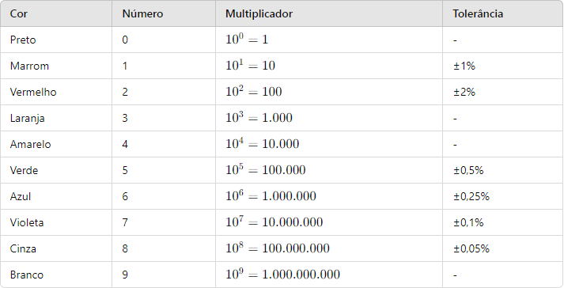

Resistores e codigo de cores
Diodo LED (Light Emitting Diode)
Um diodo LED é um componente eletrônico que emite luz quando uma corrente elétrica passa através dele. É um tipo de diodo semicondutor que converte energia elétrica em luz visível, sendo amplamente utilizado em diversas aplicações, como iluminação, displays, indicadores e sinais.
Arduino
O Arduino é uma plataforma de prototipagem eletrônica de código aberto que facilita a criação de projetos interativos. Ele é baseado em hardware (placas com microcontroladores) e software (ambiente de desenvolvimento integrado, ou IDE) que permitem que engenheiros, designers, artistas e hobbyistas criem dispositivos eletrônicos interativos com facilidade.
Arduino IDE
No Arduino IDE, os programas são escritos em uma linguagem baseada em C/C++, e o ambiente de desenvolvimento facilita a escrita, a compilação e o envio do código para a placa Arduino.
Multimetro
é uma ferramenta de teste utilizada para medir dois ou mais valores elétricos, principalmente, tensão (volts), corrente (amperes) e resistência (ohms). É a ferramenta de diagnóstico padrão para técnicos em ambientes industriais elétricos/eletrónicos.